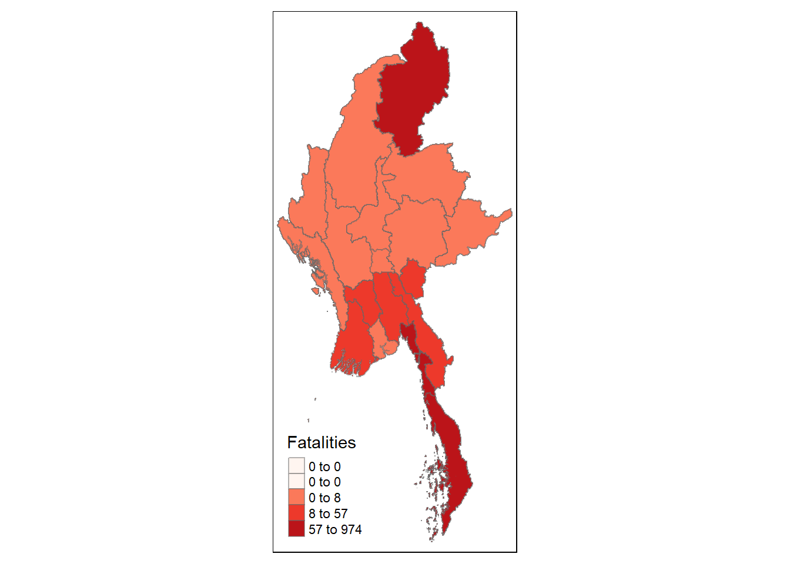
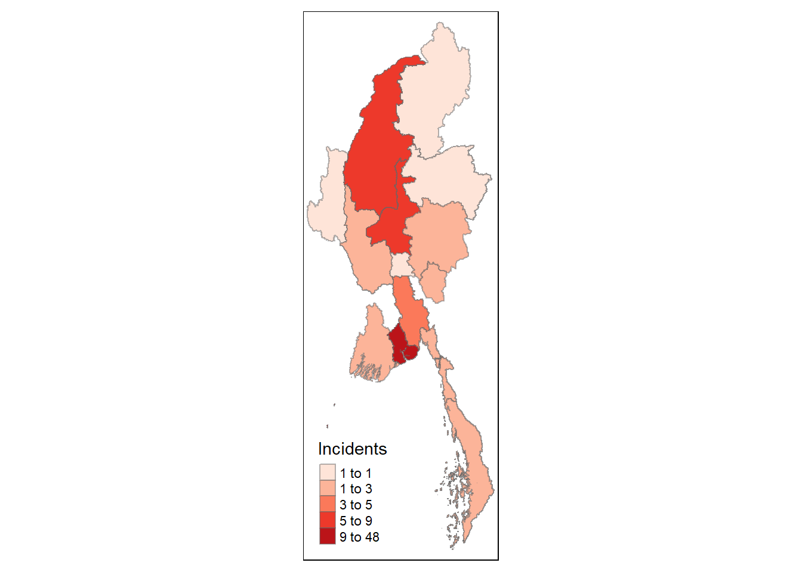

pacman::p_load(sf, tidyverse, tmap, dplyr,
raster, spatstat, spdep)Take-Home Exercise 4
Getting Started
Loading R package
Importing the ACLED data
Country specific data from the Armed Conflict Location & Event Data Project (ACLED) can be downloaded at https://acleddata.com/data-export-tool/
ACLED_MMR <- read_csv("data/MMR.csv")class(ACLED_MMR)[1] "spec_tbl_df" "tbl_df" "tbl" "data.frame" Downloading and loading the shape files for country
Shape files can be downloaded from the Myanmmar Information Management Unit (MIMU) website at https://geonode.themimu.info/layers/?limit=100&offset=0
This source was chosen over GADM and GeoBoundaries due to its updated administrative region information and map levels.
Important- Data Quality Issue with ACLED data
ACLED captures event data from national, sub-national and other credible media sources, and populates event locations based on the last known information.
However, due to the dynamic nature of conflict and politics, country/administrative boundaries and borders can sometimes be fluid. Names of administrative areas were found to have changed; either disaggregated into new countries/administrative areas or previously active but now defunct. Further, some administrative areas were agglomerated and upgraded into higher tier administrative areas.
As part of our data cleaning and preparation process, we had to identify discrepancies in both admin1 and admin2 data levels and re-name some administrative areas to sync with our downloaded shape files from MIMU.
Data Preparation and Cleaning
Loading Admin1(administrative region/area) shape files
mmr_shp_mimu_1 <- st_read(dsn = "data/geospatial3",
layer = "mmr_polbnda2_adm1_250k_mimu_1")Reading layer `mmr_polbnda2_adm1_250k_mimu_1' from data source
`C:\imranmi\ISSS608-VAA\Take-home-ex\Take-home-Ex4\data\geospatial3'
using driver `ESRI Shapefile'
Simple feature collection with 18 features and 6 fields
Geometry type: MULTIPOLYGON
Dimension: XY
Bounding box: xmin: 92.1721 ymin: 9.696844 xmax: 101.17 ymax: 28.54554
Geodetic CRS: WGS 84class(mmr_shp_mimu_1)[1] "sf" "data.frame"The Shape file for admin1 level map, is an SF object, with geometry type: Multipolygon
st_geometry(mmr_shp_mimu_1)Geometry set for 18 features
Geometry type: MULTIPOLYGON
Dimension: XY
Bounding box: xmin: 92.1721 ymin: 9.696844 xmax: 101.17 ymax: 28.54554
Geodetic CRS: WGS 84
First 5 geometries:unique_regions_mimu1 <- unique(mmr_shp_mimu_1$ST)
unique_regions_mimu1 [1] "Ayeyarwady" "Bago (East)" "Bago (West)" "Chin" "Kachin"
[6] "Kayah" "Kayin" "Magway" "Mandalay" "Mon"
[11] "Nay Pyi Taw" "Rakhine" "Sagaing" "Shan (East)" "Shan (North)"
[16] "Shan (South)" "Tanintharyi" "Yangon" There are 18 admin1 levels or states/regions in mmr_shp_mimu_1
Lets compare with our admin1 levels in our main dataset ACLED_MMR
unique_acled_regions1 <- unique(ACLED_MMR$admin1)
unique_acled_regions1 [1] "Rakhine" "Bago-East" "Sagaing" "Shan-North" "Mandalay"
[6] "Mon" "Yangon" "Shan-South" "Kayin" "Kachin"
[11] "Magway" "Ayeyarwady" "Nay Pyi Taw" "Kayah" "Chin"
[16] "Bago-West" "Tanintharyi" "Shan-East" We will write a simple function to identify the discrepancies between the shape file and our region names in our main dataset.
# Find the unique region names that are in 'unique_acled_regions1' but not in 'unique_regions_mimu1'
mismatched_admin1 <- setdiff(unique_acled_regions1, unique_regions_mimu1)
if (length(mismatched_admin1) > 0) {
print("The following region names from 'acled_mmr' do not match any in 'mimu1':")
print(mismatched_admin1)
} else {
print("All unique region names in 'acled_mmr' match the unique region names in 'mimu1.'")
}[1] "The following region names from 'acled_mmr' do not match any in 'mimu1':"
[1] "Bago-East" "Shan-North" "Shan-South" "Bago-West" "Shan-East" Lets harmonize the names in both data files. I will resave it to a new data set called ACLED_MMR_1
ACLED_MMR_1 <- ACLED_MMR %>%
mutate(admin1 = case_when(
admin1 == "Bago-East" ~ "Bago (East)",
admin1 == "Bago-West" ~ "Bago (West)",
admin1 == "Shan-North" ~ "Shan (North)",
admin1 == "Shan-South" ~ "Shan (South)",
admin1 == "Shan-East" ~ "Shan (East)",
TRUE ~ as.character(admin1)
))Checking if our changes are successful.
# Get unique admin 1 region names from 'ACLED_MMR_1'
unique_acled_regions1 <- unique(ACLED_MMR_1$admin1)
# Get unique region names from 'mmr_shp_mimu_1'
unique_map_regions_mimu1 <- unique(mmr_shp_mimu_1$ST)
# Find the unique region names that are in 'unique_acled_regions1' but not in 'unique_map_regions_mimu1'
mismatched_regions <- setdiff(unique_acled_regions1, unique_map_regions_mimu1)
if (length(mismatched_regions) > 0) {
print("The following region names from 'acled_mmr_1' do not match any in 'mmr_shp_mimu_1':")
print(mismatched_regions)
} else {
print("All unique region names in 'acled_mmr_1' match the unique region names in 'mmmr_shp_mimu_1.'")
}[1] "All unique region names in 'acled_mmr_1' match the unique region names in 'mmmr_shp_mimu_1.'"Lets do a sample plot to see how our country map looks like at admin1 level
plot(mmr_shp_mimu_1)
Loading Admin2 (administrative region/area) shape files
mmr_shp_mimu_2 <- st_read(dsn = "data/geospatial3",
layer = "mmr_polbnda_adm2_250k_mimu")Reading layer `mmr_polbnda_adm2_250k_mimu' from data source
`C:\imranmi\ISSS608-VAA\Take-home-ex\Take-home-Ex4\data\geospatial3'
using driver `ESRI Shapefile'
Simple feature collection with 80 features and 7 fields
Geometry type: MULTIPOLYGON
Dimension: XY
Bounding box: xmin: 92.1721 ymin: 9.696844 xmax: 101.17 ymax: 28.54554
Geodetic CRS: WGS 84class(mmr_shp_mimu_2)[1] "sf" "data.frame"The Shape file for admin2 level map, is an SF object, with geometry type: Multipolygon
st_geometry(mmr_shp_mimu_2)Geometry set for 80 features
Geometry type: MULTIPOLYGON
Dimension: XY
Bounding box: xmin: 92.1721 ymin: 9.696844 xmax: 101.17 ymax: 28.54554
Geodetic CRS: WGS 84
First 5 geometries:unique_regions_mimu2 <- unique(mmr_shp_mimu_2$DT)
unique_regions_mimu2 [1] "Hinthada" "Labutta"
[3] "Maubin" "Myaungmya"
[5] "Pathein" "Pyapon"
[7] "Bago" "Taungoo"
[9] "Pyay" "Thayarwady"
[11] "Falam" "Hakha"
[13] "Matupi" "Mindat"
[15] "Bhamo" "Mohnyin"
[17] "Myitkyina" "Puta-O"
[19] "Bawlake" "Loikaw"
[21] "Hpa-An" "Hpapun"
[23] "Kawkareik" "Myawaddy"
[25] "Gangaw" "Magway"
[27] "Minbu" "Pakokku"
[29] "Thayet" "Kyaukse"
[31] "Maungdaw" "Mrauk-U"
[33] "Sittwe" "Thandwe"
[35] "Hkamti" "Kale"
[37] "Kanbalu" "Katha"
[39] "Kawlin" "Mawlaik"
[41] "Monywa" "Naga Self-Administered Zone"
[43] "Sagaing" "Shwebo"
[45] "Tamu" "Yinmarbin"
[47] "Kengtung" "Monghsat"
[49] "Tachileik" "Hopang"
[51] "Kokang Self-Administered Zone" "Kyaukme"
[53] "Lashio" "Matman"
[55] "Mongmit" "Muse"
[57] "Pa Laung Self-Administered Zone" "Danu Self-Administered Zone"
[59] "Langkho" "Loilen"
[61] "Pa-O Self-Administered Zone" "Taunggyi"
[63] "Dawei" "Kawthoung"
[65] "Mandalay" "Meiktila"
[67] "Myingyan" "Nyaung-U"
[69] "Pyinoolwin" "Yamethin"
[71] "Mawlamyine" "Thaton"
[73] "Det Khi Na" "Oke Ta Ra"
[75] "Kyaukpyu" "Myeik"
[77] "Yangon (East)" "Yangon (North)"
[79] "Yangon (South)" "Yangon (West)" There are 80 admin2 levels or states/districts in mmr_shp_mimu_2
Lets compare with our admin2 levels in our main dataset ACLED_MMR
unique_acled_regions2 <- unique(ACLED_MMR$admin2)
unique_acled_regions2 [1] "Maungdaw" "Bago"
[3] "Shwebo" "Kyaukme"
[5] "Pyinoolwin" "Muse"
[7] "Sittwe" "Yinmarbin"
[9] "Thaton" "Yangon-North"
[11] "Pa-O Self-Administered Zone" "Hpapun"
[13] "Kyaukpyu" "Yangon-West"
[15] "Mongmit" "Bhamo"
[17] "Mrauk-U" "Yangon-East"
[19] "Yangon-South" "Monywa"
[21] "Gangaw" "Pathein"
[23] "Katha" "Taungoo"
[25] "Kanbalu" "Lashio"
[27] "Mawlamyine" "Myitkyina"
[29] "Kawkareik" "Loilen"
[31] "Mandalay" "Kawlin"
[33] "Kyaukse" "Magway"
[35] "Meiktila" "Pakokku"
[37] "Taunggyi" "Tamu"
[39] "Nay Pyi Taw" "Mohnyin"
[41] "Kale" "Det Khi Na"
[43] "Myingyan" "Loikaw"
[45] "Matupi" "Pyay"
[47] "Sagaing" "Myeik"
[49] "Dawei" "Thayarwady"
[51] "Thandwe" "Mawlaik"
[53] "Bawlake" "Pyapon"
[55] "Hinthada" "Thayet"
[57] "Pa Laung Self-Administered Zone" "Mindat"
[59] "Hkamti" "Kokang Self-Administered Zone"
[61] "Hpa-An" "Danu Self-Administered Zone"
[63] "Myawaddy" "Maubin"
[65] "Hakha" "Falam"
[67] "Minbu" "Monghsat"
[69] "Puta-O" "Hopang"
[71] "Nyaung-U" "Kawthoung"
[73] "Yamethin" "Yangon"
[75] "Myaungmya" "Mong Pawk (Wa SAD)"
[77] "Oke Ta Ra" "Matman"
[79] "Kengtung" "Naga Self-Administered Zone"
[81] "Labutta" "Langkho"
[83] "Tachileik" We will write a simple function to identify the discrepancies between the shape file and our state/district names in our main dataset.
# Find the unique region names that are in 'unique_acled_regions2' but not in 'unique_regions_mimu2'
mismatched_admin2 <- setdiff(unique_acled_regions2, unique_regions_mimu2)
if (length(mismatched_admin2) > 0) {
print("The following region names from 'acled_mmr' do not match any in 'mimu2':")
print(mismatched_admin2)
} else {
print("All unique region names in 'acled_mmr' match the unique region names in 'mimu2.'")
}[1] "The following region names from 'acled_mmr' do not match any in 'mimu2':"
[1] "Yangon-North" "Yangon-West" "Yangon-East"
[4] "Yangon-South" "Nay Pyi Taw" "Yangon"
[7] "Mong Pawk (Wa SAD)"Lets harmonize the names in both data files. I will resave it to the previous data set called ACLED_MMR_1
ACLED_MMR_1 <- ACLED_MMR_1 %>%
mutate(admin2 = case_when(
admin2 == "Yangon-East" ~ "Yangon (East)",
admin2 == "Yangon-West" ~ "Yangon (West)",
admin2 == "Yangon-North" ~ "Yangon (North)",
admin2 == "Yangon-South" ~ "Yangon (South)",
admin2 == "Mong Pawk (Wa SAD)" ~ "Tachileik",
admin2 == "Nay Pyi Taw" ~ "Det Khi Na",
admin2 == "Yangon" ~ "Yangon (West)",
TRUE ~ as.character(admin2)
))Checking if our changes are successful.
# Get unique admin 2 district names from 'ACLED_MMR_1'
unique_acled_regions2 <- unique(ACLED_MMR_1$admin2)
# Get unique district names from 'mmr_shp_mimu_2'
unique_map_regions_mimu2 <- unique(mmr_shp_mimu_2$DT)
# Find the unique district names that are in 'unique_acled_regions2' but not in 'unique_map_regions_mimu2'
mismatched_regions2 <- setdiff(unique_acled_regions2, unique_map_regions_mimu2)
if (length(mismatched_regions2) > 0) {
print("The following district names from 'acled_mmr_1' do not match any in 'mmr_shp_mimu_2':")
print(mismatched_regions2)
} else {
print("All unique district names in 'acled_mmr_1' match the unique district names in 'mmmr_shp_mimu_2.'")
}[1] "All unique district names in 'acled_mmr_1' match the unique district names in 'mmmr_shp_mimu_2.'"Lets do a sample plot to see how our country map looks like at admin2 (districts) level.
plot(mmr_shp_mimu_2)
Data Wrangling
For the purposes of plotting choropleth maps, I will first create subsets for each admin level
data_prepared_1 <- ACLED_MMR_1 %>%
group_by(year, admin1) %>%
summarise(Incidents = n(),
Fatalities = sum(fatalities, na.rm = TRUE)) %>%
ungroup()Checking the total sums of incidents and fatalities.
# Calculate the total number of incidents
total_incidents1 <- sum(data_prepared_1$Incidents)
# Calculate the total number of fatalities
total_fatalities1 <- sum(data_prepared_1$Fatalities)
# Print the totals
print(paste("Total Incidents:", total_incidents1))[1] "Total Incidents: 57198"print(paste("Total Fatalities:", total_fatalities1))[1] "Total Fatalities: 57593"data_prepared_2 <- ACLED_MMR_1 %>%
group_by(year, admin2) %>%
summarise(Incidents = n(),
Fatalities = sum(fatalities, na.rm = TRUE)) %>%
ungroup()Checking the total sums of incidents and fatalities.
# Calculate the total number of incidents
total_incidents2 <- sum(data_prepared_2$Incidents)
# Calculate the total number of fatalities
total_fatalities2 <- sum(data_prepared_2$Fatalities)
# Print the totals
print(paste("Total Incidents:", total_incidents2))[1] "Total Incidents: 57198"print(paste("Total Fatalities:", total_fatalities2))[1] "Total Fatalities: 57593"Next, I will do a spatial join between my shape files and attribute files
ACLED_MMR_admin1 <- left_join(mmr_shp_mimu_1, data_prepared_1,
by = c("ST" = "admin1"))
ACLED_MMR_admin2 <- left_join(mmr_shp_mimu_2, data_prepared_2,
by = c("DT" = "admin2"))Choropleth Map of Incidents & Fatalities
tm_shape(ACLED_MMR_admin1)+
tm_fill("Incidents",
n = 5,
style = "quantile") +
tm_borders(alpha = 0.5)
tm_shape(ACLED_MMR_admin1)+
tm_fill("Fatalities",
n = 5,
style = "quantile") +
tm_borders(alpha = 0.5)
tm_shape(ACLED_MMR_admin2)+
tm_fill("Incidents",
n = 5,
style = "quantile") +
tm_borders(alpha = 0.5)
tm_shape(ACLED_MMR_admin2)+
tm_fill("Fatalities",
n = 5,
style = "quantile") +
tm_borders(alpha = 0.5)tm_shape(ACLED_MMR_admin1) +
tm_fill("Fatalities",
style = "quantile",
palette = "Reds",
thres.poly = 0) +
tm_facets(by="ST",
free.coords=TRUE,
drop.shapes=TRUE) +
tm_layout(legend.show = FALSE,
title.position = c("center", "center"),
title.size = 20) +
tm_borders(alpha = 0.5)
tm_shape(ACLED_MMR_admin1) +
tm_fill("Incidents",
style = "quantile",
palette = "Reds",
thres.poly = 0) +
tm_facets(by="ST",
free.coords=TRUE,
drop.shapes=TRUE) +
tm_layout(legend.show = FALSE,
title.position = c("center", "center"),
title.size = 20) +
tm_borders(alpha = 0.5)